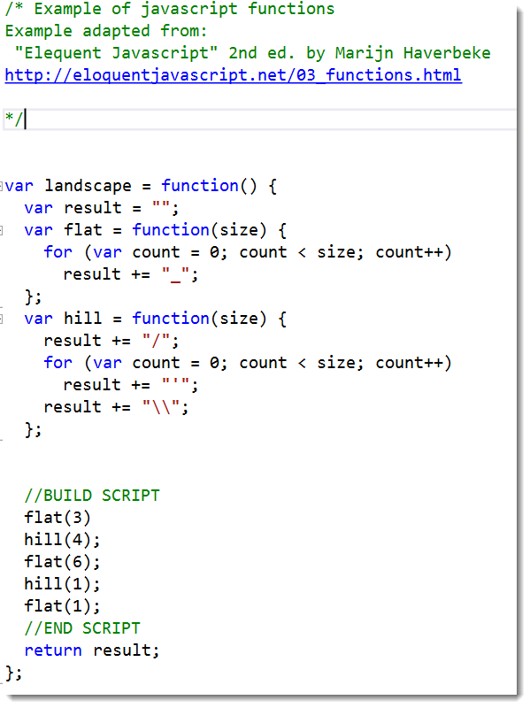
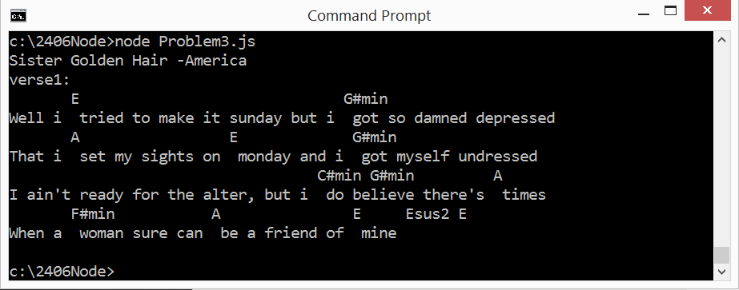
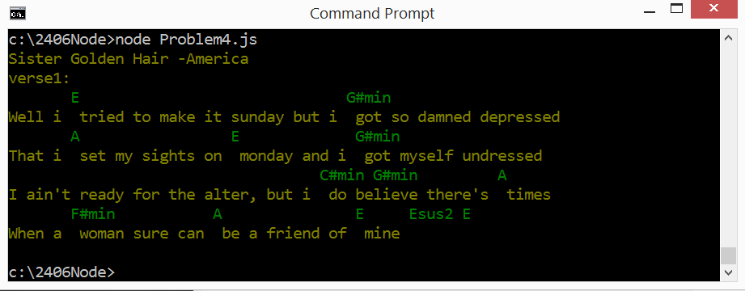

COMP 2406 - Fall 2014 Tutorial #2
Javascript Basics
© L.D. Nel 2014
Revisions
rev 1: added sample code that shows how text file can be read as lines into an array.
Description:
The purpose of this tutorial is to get you started working with the most basic features of javascript. The exercises are not meant to be complex from a programming point of view. They are all, in fact, problems that we used for COMP 1405 tutorials but here you need to figure out how to do them using javascript. Also, in 1405 we probably would have asked you to use a particular feature of the language like strings, or arrays, or objects or whatever feature the tutorial was meant to emphasize. Here, however, you are free to use whatever features you want but you will have to figure out how to use them by reading about javascript. Check out the code academy tutorials listed on the resource page if the web site as well.
IMPORTANT: This tutorial is meant as a homework assignment and for you to demonstrate your results at your tutorial session. You will not be able to complete it if you only start when you come to the tutorial. You will need to learn some basics of javascript on your own and come up with a strategy to solve the problems.
The tutorial and code files are available on the course web site and there should also be a .zip with all the files together so you can download them all at once if that is more convenient.
To get credit for the tutorial you must complete, or make significant progress on, the exercise problems provided and demonstrate your results to the tutorial TA before you leave the tutorial.
Instructions:
Problem 1)
Download the file in the tutorial demo_code folder called Problem1.js and examine the javascript. It should look like that shown below. Run the code with node.js.and produce out in the console window (i.e. you don't need the browser.) It should produce a simple string output meant to look like a "landscape profile" like this:
___/''''\______/'\_

For problem 1 modify this code so that it uses the '_' underscore character for both the flat portions and the tops of the hills. That is, so that the following build script portion:
//BUILD SCRIPT
flat(3)
hill(7);
flat(2);
hill(5);
flat(4);
hill(2);
flat(2);
//END SCRIPT
produces an output that looks like this:
_____ ___ ___/ \__/ \____/\_
To do this the underscore characters that form the top of the hills must be printed on the previous line of output text. That is, the output represents two lines of text unlike that of the demo code. Also notice that the hill can have a top with no flat portions so the argument passed to the hill() function now represents the total width of the hill including its '/' and '\' characters.
To do this exercise you can use whatever you want from javascript: strings, arrays, objects whatever, though the solution probably does not require anything more complex than strings. You will have to figure out how to use the features you do choose in javascript by reading about the language.
Problem 2)
For problem 2 make a new version of the code from the previous problem so you can have both mountains and hills. The output will now represent three lines of output text. Specifically, modify the code so that the following build script will produce the output shown.
//BUILD SCRIPT
flat(3)
mountain(7);
flat(2);
mountain(4);
flat(4);
hill(3);
flat(1);
//END SCRIPT
Output:
___
/ \ /\ _
___/ \__/ \____/ \_
When you demonstrate your code the TA's will ask you to make slight changes to the build script portion and want to see your resulting output.
Problem 3)
Don't Bore Us, Get To The Chorus
Problem 1 and 2 were a warm up, now lets use the strategy of breaking a line of text into two lines for a more useful purpose. We will again just do output on the console -you will not need the browser.
In the previous tutorial you saw javascript code that could open a file, read its contents and send that to the browser that requested it. Now you need to do some research an figure out how you can read a file in Node.js one line at a time so you can manipulate the line of text. You will need to do this research before you can proceed with these questions. (rev 1: we have added some sample code in the demo code section that shows how a text file can be read as lines into an array.)
Background:
Many amateur musicians, especially guitar players, rely on chord and lyric sheets to learn and play songs. A popular format is to store chords and lyrics in a text file with the chords embedded within the lyrics using square brackets like this.
Sister Golden Hair -America verse1: Well i [E] tried to make it sunday but i [G#min] got so damned depressed That i [A] set my sights on [E] monday and i [G#min] got myself undressed I ain't ready for the alter, but i [C#min] do [G#min] believe there's [A] times When a [F#min] woman sure can [A] be a friend of [E] mine [Esus2] [E] verse2: Well i [E] keep on thinkin bout you sister [G#min] golden hair surprise That i just can't live without you can't you [G#min] see it in my eyes I've been [A] one poor corre[F#min]spondent, i've been [C#min] too too [G#min] hard to [A] find But it [F#min] doesn't mean you [A] ain't been on my [E] mind [Esus2] [E] chorus: Will you [B] meet me in the middle will you [A] meet me in the [E] end Will you [B] love me just a little just en[A]ough to show you [E] care Well i [F#min] tried to fake it i [G#min] don't mind sayin i [A] just can't make it repeat intro, then verse 2, then chorus, then they do this doo-wop thing that uses the chorus (B - A - E) thing
This is a simplified version of what is known as chord pro format. It is a easy way to keep chords properly aligned with lyrics. Often text files in this format have a .crd extention or something like that but for our purposes .txt will do.
When these files are displayed for the viewer, however, they are meant to be shown with the chords appearing above the lyrics as follows.
Sister Golden Hair -America
verse1:
E G#min
Well i tried to make it sunday but i got so damned depressed
A E G#min
That i set my sights on monday and i got myself undressed
C#min G#min A
I ain't ready for the alter, but i do believe there's times
F#min A E Esus2 E
When a woman sure can be a friend of mine
Exercise:
Write the javascript that is necessary to read the lines from a chord pro text file in your songs directory and display the song's lyrics with the chords in the right location above the lyrics.
Your code will have to read the lines of the text file and convert each string containing both lyrics and chords into two strings: one containing the chords and one containing the lyrics. The chord string will have to have spaces appropriatetly placed so that the chords will appear properly above the correct word in the lyrics. (Note to do this you should problably do everything using a mono-space font).
When you have completed this exercise our output to the console might look something like this:

Problem 4)
Colour My World
Go to the https://www.npmjs.org web site and search for an npm module called "colour". (note there is also a module called "color" but that is the wrong one.)
Learn what service this module provides and look at the example code provided there to see how you can colour the text on your console screen.
Install the module using the npm install "colour" command in your console window.
Finally modify the javascript code from problem 3 to use this colour module and to cause the song's lyrics to be shown in one colour and the chords above the lyrics to appear in a different colour as shown in this sample output.

When you have completed these problems demonstrate your code to a TA's to get credit for the tutorial.Â
Optional Advanced Problems:
1) Write the javascript required to prompt the user for a song name and then find that song in the songs directory for them.